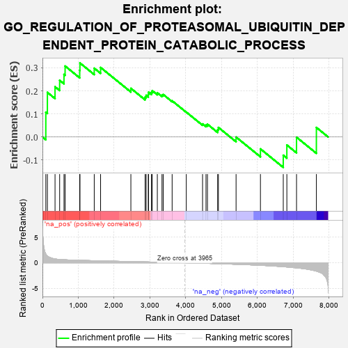
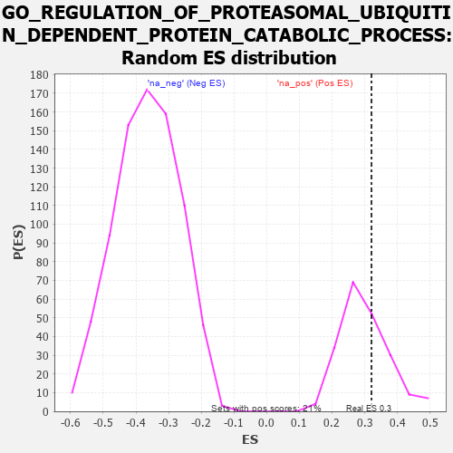

| | | Dataset | 7d |
| Phenotype | NoPhenotypeAvailable |
| Upregulated in class | na_pos |
| GeneSet | GO_REGULATION_OF_PROTEASOMAL_UBIQUITIN_DEPENDENT_PROTEIN_CATABOLIC_PROCESS |
| Enrichment Score (ES) | 0.32064876 |
| Normalized Enrichment Score (NES) | 1.0746863 |
| Nominal p-value | 0.34146342 |
| FDR q-value | 0.66554594 |
| FWER p-Value | 1.0 |
Table: GSEA Results Summary

Fig 1: Enrichment plot: GO_REGULATION_OF_PROTEASOMAL_UBIQUITIN_DEPENDENT_PROTEIN_CATABOLIC_PROCESS
Profile of the Running ES Score & Positions of GeneSet Members on the Rank Ordered List
| PROBE | GENE SYMBOL | GENE_TITLE | RANK IN GENE LIST | RANK METRIC SCORE | RUNNING ES | CORE ENRICHMENT | | 1 | UBE2K | | | 94 | 1.739 | 0.1074 | Yes |
| 2 | DESI1 | | | 138 | 1.332 | 0.1932 | Yes |
| 3 | GSK3A | | | 351 | 0.745 | 0.2176 | Yes |
| 4 | CDC20 | | | 480 | 0.644 | 0.2456 | Yes |
| 5 | FBXW8 | | | 601 | 0.594 | 0.2712 | Yes |
| 6 | GLMN | | | 632 | 0.583 | 0.3074 | Yes |
| 7 | AKT1 | | | 1040 | 0.476 | 0.2887 | Yes |
| 8 | TAF9 | | | 1046 | 0.475 | 0.3206 | Yes |
| 9 | RBX1 | | | 1445 | 0.401 | 0.2980 | No |
| 10 | N4BP1 | | | 1622 | 0.370 | 0.3012 | No |
| 11 | UBXN1 | | | 2467 | 0.232 | 0.2108 | No |
| 12 | UCHL5 | | | 2864 | 0.172 | 0.1727 | No |
| 13 | MTM1 | | | 2893 | 0.168 | 0.1807 | No |
| 14 | SOCS4 | | | 2953 | 0.157 | 0.1840 | No |
| 15 | XPO1 | | | 2960 | 0.156 | 0.1940 | No |
| 16 | UFL1 | | | 3041 | 0.144 | 0.1937 | No |
| 17 | KEAP1 | | | 3063 | 0.141 | 0.2008 | No |
| 18 | FZR1 | | | 3205 | 0.122 | 0.1913 | No |
| 19 | CHFR | | | 3335 | 0.099 | 0.1819 | No |
| 20 | SMAD7 | | | 3369 | 0.093 | 0.1841 | No |
| 21 | WAC | | | 3618 | 0.056 | 0.1568 | No |
| 22 | RNF14 | | | 4013 | -0.010 | 0.1078 | No |
| 23 | LRRK2 | | | 4467 | -0.087 | 0.0567 | No |
| 24 | BAG6 | | | 4563 | -0.108 | 0.0522 | No |
| 25 | NUB1 | | | 4604 | -0.119 | 0.0553 | No |
| 26 | CLU | | | 4889 | -0.174 | 0.0315 | No |
| 27 | TLK2 | | | 4909 | -0.179 | 0.0414 | No |
| 28 | SUMO2 | | | 5402 | -0.296 | -0.0003 | No |
| 29 | PLK1 | | | 6082 | -0.500 | -0.0516 | No |
| 30 | GSK3B | | | 6719 | -0.768 | -0.0790 | No |
| 31 | GIPC1 | | | 6819 | -0.826 | -0.0349 | No |
| 32 | BBS7 | | | 7089 | -0.988 | -0.0010 | No |
| 33 | TAF1 | | | 7643 | -1.633 | 0.0413 | No |
Table: GSEA details [plain text format]

Fig 2: GO_REGULATION_OF_PROTEASOMAL_UBIQUITIN_DEPENDENT_PROTEIN_CATABOLIC_PROCESS: Random ES distribution
Gene set null distribution of ES for GO_REGULATION_OF_PROTEASOMAL_UBIQUITIN_DEPENDENT_PROTEIN_CATABOLIC_PROCESS